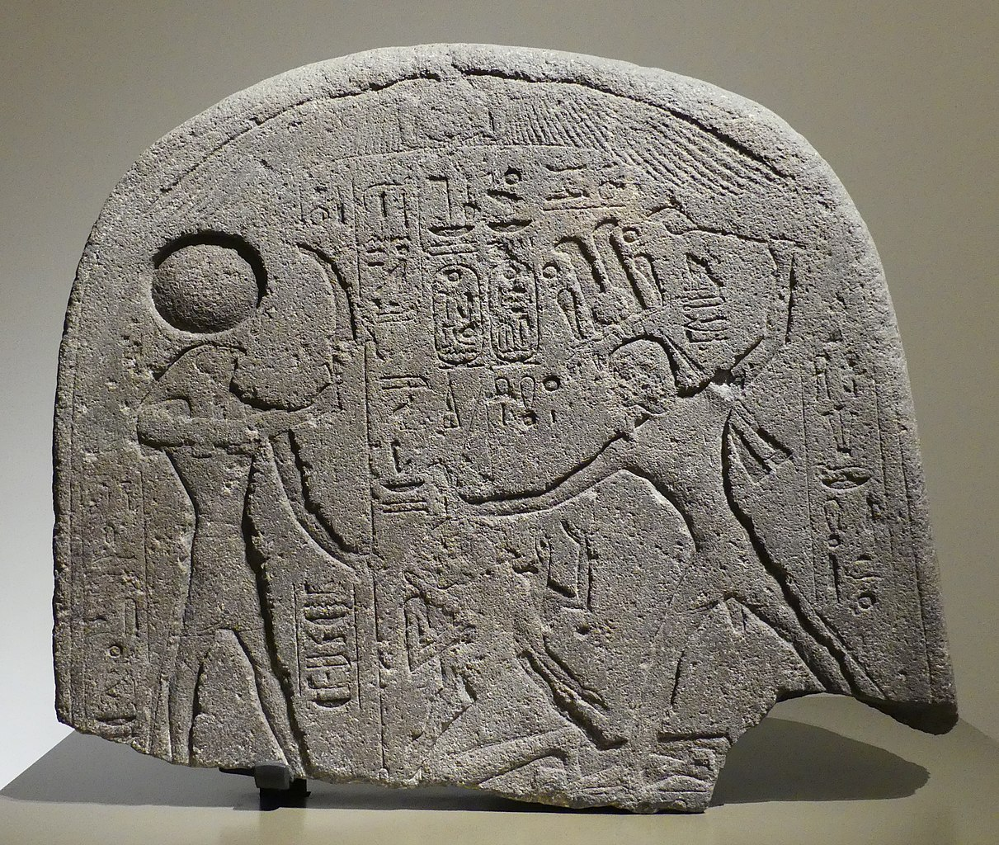

Culture | Greece | Boeotia
The Myth of Cadmus
Published: March 1 2021
A clear synopsis of the myth of Cadmus & how he came to found the city of Thebes.
Introduction
Just north of Attica and Athens lies the region of Boeotia. It includes vast rural areas, mountain ranges and the historic city of Thebes. The region forms the backdrop to the myth of Cadmus - and we will learn about it in this article.
While Cadmus is closely linked to the Greek region of Boeotia, he grew up in a faraway place. He was prince of Tyre, a city that currently lies in Lebanon. This part of the Middle East was called 'Little Asia' in Ancient Times. The question is, how did Cadmus end up in an area so far from home? (Tyre is over 1500km away from Thebes) Let us go through his myth and found out.
The father of Cadmus was Agenor, king of Tyre. He was said to be the son of Poseidon and father of Europa. In other words, the myth suggests Cadmus' family had noble and divine origins. 
Tyre was a very old city that dates from 2700BCE. It had been under Egyptian control in the 2nd millenium BCE. That's why some myths claim that Agenor was of Egyptian descend.
But with the prosperity of Agenor's realm came jealousy from others. Zeus had seen Agenor's beautiful daughter within the realm of mortals. That's when he disguised himself as a white bull, and flew to the region of Tyre.
When Europa, daughter of Agenor, saw the white bull she was immediately drawn to its pure colour and seemingly calm character.
Zeus let Europa approach, and touch him.
He even let Europa ride on his back, and present flowers to his face.
However, little by little Zeus was trying to lure Europa to the sea.
In the end, he succeeded and abducted her to the distant island of Crete.

The beautiful Europa riding on Zeus, who is disguised as a bull. Did you know that the continent of Europe is named after this Phoenician princess?
And this is where Cadmus comes into the story. Agenor had sent his son to find Europa, his beloved sister. That's how Cadmus' story began, but it did not end as you might expect. Namely, Cadmus turned out unsuccessful in finding his sister.
Instead, Europa gave birth to king Minos of Crete and Cadmus would experience a whole other journey of his own. After Cadmus' long yet unsuccessful wanderings, he found his way into Delphi: a place where people from all across Greece came for council from a mysterious cave.
Upon invoking the oracle, Cadmus was surprised to meet the god Apollo. Apollo told him to stop the search for Europa and focus on building his own city... And that is how Thebes came to be.
He waited on a beautiful bull to 'lay down in a field out of weariness' - and that's where he founded it.
It was called Cadmeia, after its founding king.
But, soon after it came to be known as Thebes, the most prominent town in Boeotia.